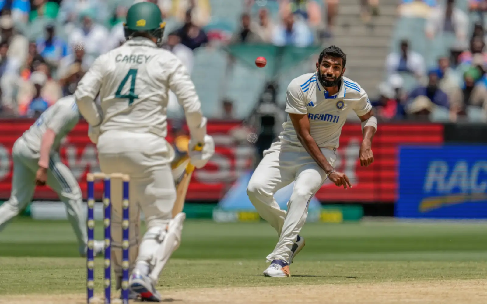

Baseball superstar Shohei Ohtani and his wife Mamiko Tanaka are expecting their first child, the World Series winner announced today.
“Can’t wait for the little rookie to join our family soon!” Ohtani wrote on Instagram, alongside a picture of baby shoes, a baby sleepsuit and his adored pet dog, named Decoy.

Bumrah gives India shot at victory, but Australia lead by 333
Novak Djokovic today called for more transparency around doping suspensions in tennis, saying high-ranked players appeared to be treated differently to others.
The 24-time Grand Slam champion agreed with Australian Nick Kyrgios, who yesterday said integrity in the sport was “awful”.